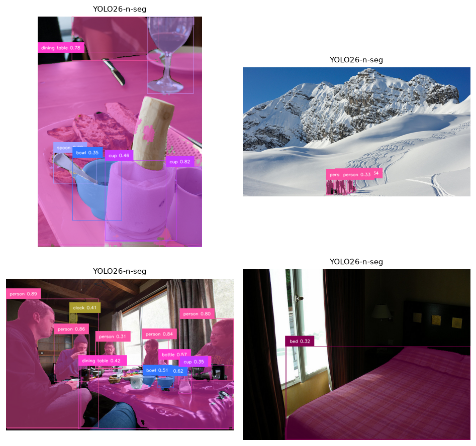
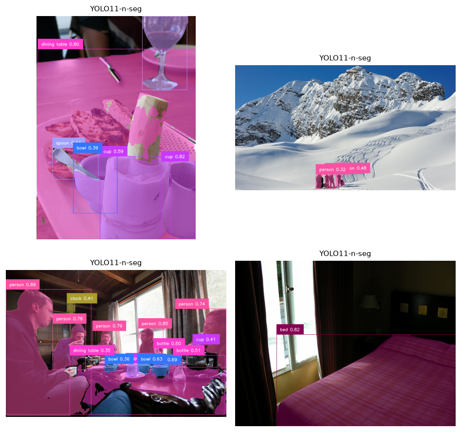
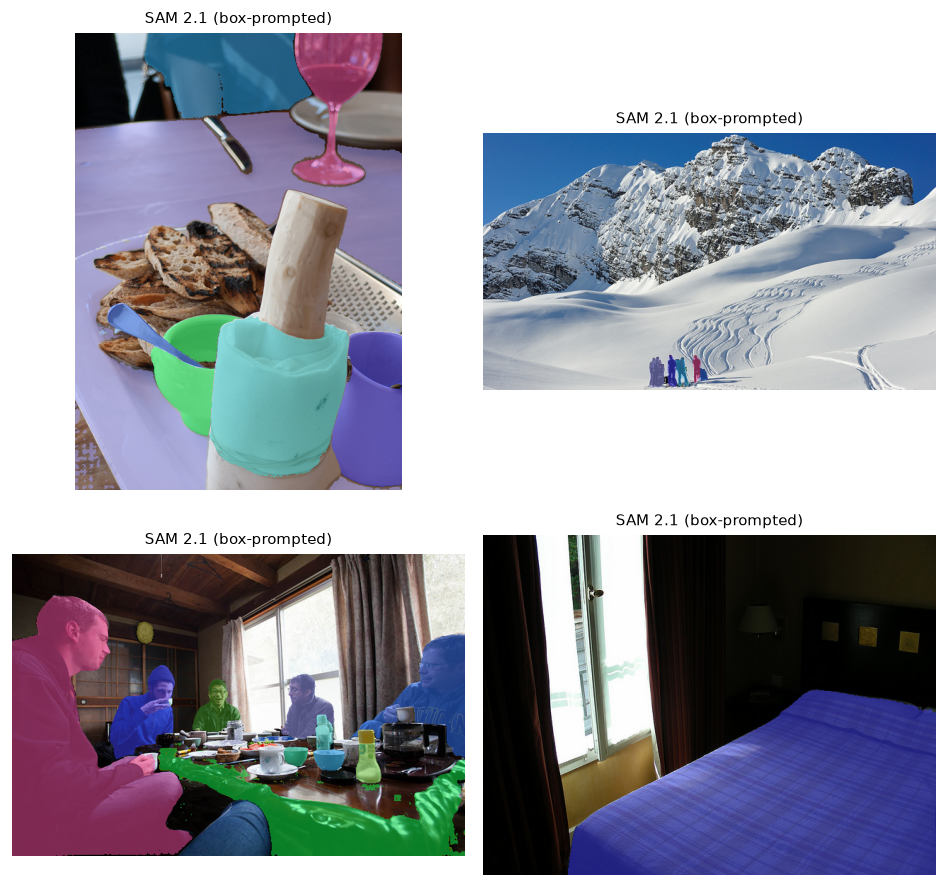

03 · Segmentation
From boxes to pixels — closed-set instance masks vs promptable SAM 2.1
The task
Segmentation assigns labels at the pixel level rather than the box level. Two flavours matter here:
- Instance segmentation — a separate mask per object (two people → two masks), each with a class. This is detection + a mask head.
- Promptable segmentation — “segment whatever I point at / box / name”, with no fixed class set. This is the foundation-model approach, embodied by Segment Anything.
Two paradigms
| Model | Approach | Label set | Trait |
|---|---|---|---|
| YOLO26-seg / YOLO11-seg | Closed-set instance segmentation | 80 COCO classes | Fast; every mask comes with a class label |
| SAM 2.1 | Promptable segmentation | none — class-agnostic | Segments anything from a point/box/mask prompt; no labels |
The natural way they combine is the detect-then-segment pipeline: a detector proposes boxes, and SAM turns each box into a high-quality mask. We use exactly that here — SAM 2.1 is prompted with the YOLO26-seg boxes.
How each works
- YOLO-seg adds a mask-prototype head to the detector: it predicts a handful of prototype masks per image plus per-object coefficients that linearly combine them — cheap, hence the high frame-rate.
- SAM 2.1 is a promptable transformer with a heavy image encoder and a light mask decoder. Encode the image once, then any prompt (point, box) decodes to a mask in milliseconds. It knows nothing about classes — it only knows “object-ness”, which is why it generalises to things no COCO model has names for.
How we measured
This module is qualitative + latency (warmed-up single-image forwards on the local RTX 3090 Ti); full mask-mAP on COCO is a deeper follow-up. The point here is to see the difference between a fast labelled instance segmenter and a slower, class-agnostic, promptable one.
Results
Segmentation: speed & masks
| Model | Family | License | Latency (ms) | FPS | Masks/img |
|---|---|---|---|---|---|
| YOLO26-n-seg | instance (YOLO) | AGPL-3.0 | 23.79 | 42.0 | 7.0 |
| YOLO11-n-seg | instance (YOLO) | AGPL-3.0 | 22.9 | 43.7 | 6.5 |
| SAM 2.1 (base) | promptable | Apache-2.0 | 93.39 | 10.7 | n/a |
Latency = mean over warmed-up single-image forwards on NVIDIA GeForce RTX 3090 Ti | 24.0 GB | sm_86 | torch 2.11.0+cu128 / CUDA 12.8. SAM 2.1 is prompted with the YOLO26-seg boxes (detect-then-segment). This module is qualitative + latency; mask-mAP on COCO is a deeper follow-up.
- Labels vs flexibility. YOLO-seg runs at ~43 fps and hands you a class with every mask — but only for its 80 COCO categories. SAM 2.1 is ~4× slower (~11 fps) and returns no label, yet will segment anything you can point at, including objects no detector was trained on.
- They compose. The figures show the standard pattern: the detector finds and names objects; SAM refines each box into a crisp mask. Open-vocab detection (module 01) + SAM gives you “segment anything you can describe in words”.
- Mask quality differs from box quality. A correct box with a sloppy mask is a common failure; SAM’s masks are typically tighter around object boundaries than a fast instance head’s.
Qualitative results



Where segmentation fails
- Thin / wispy structures (hair, wires, chain-link) — hard for any mask head.
- Overlapping instances — instance segmenters merge or split touching objects.
- Ambiguous prompts — a single SAM point can mean “the shirt” or “the whole person”; SAM resolves ambiguity by returning multiple candidate masks.
- Class limits (instance) — YOLO-seg simply can’t mask a class it never trained on.
Reproduce
uv sync --group detection # ultralytics provides YOLO-seg and SAM
uv run python modules/03-segmentation/run.py --images 4